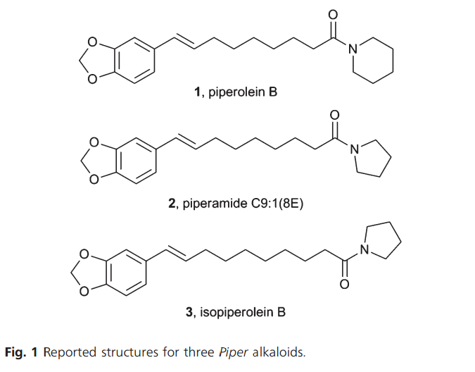

Aim of research profect is basically to find a potent cytotoxin (~0.1-1µm<IC50) that can be sold to Pharma for big cash money.
Study by Dr Moran last year on three compounds found in pepper plant (Piper) found cytotoxicity at 50-100µm<IC50, so we want to make 10 or so analogues using/adding groups we know “add” cytotoxicity, as well as trying some we don't know.
The overall role/importance of generating potent molecules will be their role in antibacterial and antitumour (more important) activity.
The Moran Group has developed a two-step synthesis to generate isopiperolin B, but yield is <37% and may need work. The briefing sheet shows the cytotoxic activity of isopiperolin B and some of its' analogues, but only the original compound shows high[1] (30µm < IC50 < 100µm) potency.
Piperine gives anther direction for this study, to which we could generate 7-8 analogues of; adding/removing: ketones, COH, amides, 5/6 membered rings.
As this is a “back burner” project as far as the biolab is concerned (for testing), the lab would require 2-4 weeks to test cytotoxicity. Bear in mind the research lab may only be free Wednesdays and Fridays, but undergrad labs in the X building could be used (research lab is on W1).
Wes would have preferred me starting lab work immediately due to turnaround of cell tests but the lit review is scheduled for this month “probably Conway's preference”.
The papers he has sent me are not everything I need and I should find my own papers, especially if related to Pharmacy.